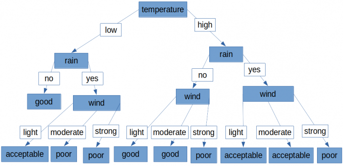
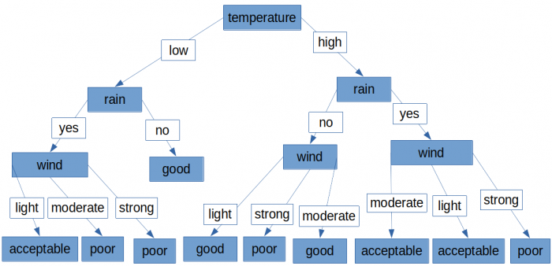
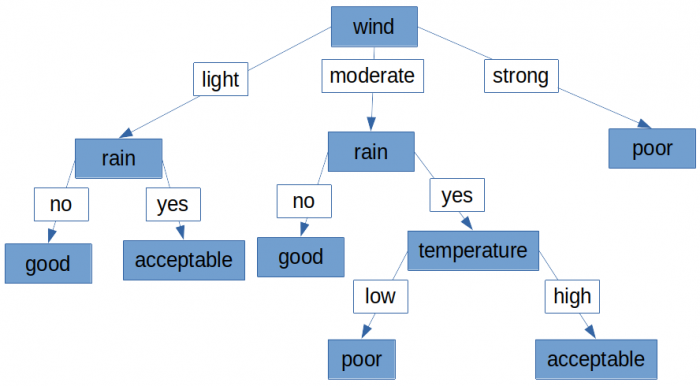
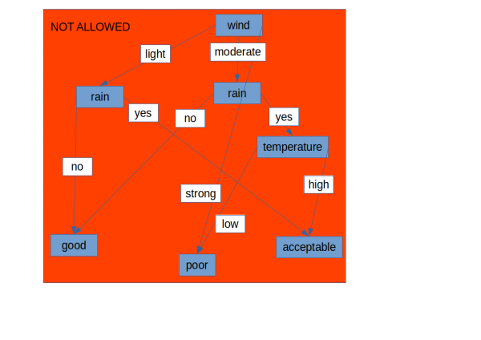

−Table of Contents
Assignment 3 (Summer 2023)
Please read the whole page word by word from top to bottom at least once. Do not just skim through. Before you ask a question please check again whether the answer can already be found here and give yourself some time to think.
Context
In this assignment we are going to apply what we have seen in the second assignment to a task from data mining and machine learning.
Let's begin with an example. Imagine someone who goes kayaking on days with different conditions and keeps a record such as the following one, in which a certain configuration of conditions (temperature, rain, wind) is labeled with an assessment of the quality of the experience:
| temperature | rain | wind | quality |
|---|---|---|---|
| high | yes | light | acceptable |
| low | yes | light | acceptable |
| low | no | moderate | good |
| high | yes | strong | poor |
| high | yes | moderate | acceptable |
| high | no | moderate | good |
| low | yes | strong | poor |
| high | no | light | good |
| low | yes | moderate | poor |
| high | no | strong | poor |
The rows are not in any particular order and not all the possible combinations are present.
A first example of tree representation
We could for example represent this information as a tree as follows:

We consider the implementation of such trees using a variation of the implementation we have seen in the second assignment.
As you can see, in this assignment the edges are labeled. So the EdgeNode structured data type will also have a val field to label the edge:
struct EdgeNode{ tree_t val; TreeNode* subtree; EdgeNode* next; };
You can also see that in this assignment there can be repetitions in the tree.
The tree above with a different order for the edges
In this assignment the order of the edges doesn't matter, therefore the following tree would be considered equivalent to the previous one:

A tree representation with fewer nodes
The following tree represents the same information in fewer nodes, therefore it is more effective for our purposes:

Not a tree
The nodes of a tree cannot have several parents (otherwise it's not a tree, it's a different data structure) therefore for example this would not be correct:

Implementation
Write a class called A3Tree that can be used for the purpose illustrated by the example above. The following is an example of a main with testing for the example above (header inclusions have been omitted), use this example to infer what member functions need to be included in the class:
int main(){ // direct initialisation of a vector // in this case it's a vector containing vectors // each of which contains words (std::string) std::vector<std::vector<std::string>> input { {"temperature", "rain", "wind", "quality"}, {"high", "yes", "light", "acceptable"}, {"low", "yes", "light", "acceptable"}, {"low", "no", "moderate", "good"}, {"high", "yes", "strong", "poor"}, {"high", "yes", "moderate", "acceptable"}, {"high", "no", "moderate", "good"}, {"low", "yes", "strong", "poor"}, {"high", "no", "light", "good"}, {"low", "yes", "moderate", "poor"}, {"high", "no", "strong", "poor"} }; A3Tree t(input); // direct initialisation of a vector: std::vector<std::string> q{"low", "yes", "strong"}; std::cout << t.query(q) << std::endl; // this should print: poor // assigning new content overwriting the previous content: q = {"high", "yes", "moderate"}; std::cout << t.query(q) << std::endl; // this should print: acceptable std::cout << t.node_count() << std::endl; // this depends on the actual tree generated, // if we consider the tree in the example which // has wind in the root node this should print: 10 std::cout << t.leaf_node_count() << std::endl; // this depends on the actual tree generated, // if we consider the tree in the example which // has wind in the root node this should print: 6 }
As mentioned above, the implementation must be based on a variation of what we have seen in the second assignment, so you will need to include (and meaningfully use) the following (include it as given, do not alter it):
struct TreeNode; struct EdgeNode; typedef std::string tree_t; struct EdgeNode{ tree_t val; TreeNode* subtree; EdgeNode* next; }; struct TreeNode{ tree_t val; EdgeNode* subtree_l; };
Within the A3Tree class definition it will therefore look like this:
class A3Tree{ // there will be other code here private: TreeNode* t; // member data pointing to the root of the tree // do not change the name or anything else regarding // this member data declaration };
You can define and use all the additional functions, member data, member functions, structured data types, classes you need.
Write some comments at the beginning of each function or member function to explain what it does. Do not comment code line by line. Remember that it is important that your code is clear and readable (minimising the need for comments).
You can include any headers from the standard library except for the algorithm header.
Submit a main that includes evidence of your testing and include some comments on the testing. For our testing we will also replace your main with our own main.
Your implementation should work in principle on an input with any number of columns and in which any number of distinct values may appear in each column. You can assume that the names of the columns and the values have no spaces. For example:
int main(){ std::vector<std::vector<std::string>> input1 { {"temperature", "rain", "wind", "quality"}, {"high", "yes", "light", "acceptable"}, {"low", "yes", "light", "acceptable"}, {"low", "no", "moderate", "good"}, {"high", "yes", "strong", "poor"}, {"high", "yes", "moderate", "acceptable"}, {"high", "no", "moderate", "good"}, {"low", "yes", "strong", "poor"}, {"high", "no", "light", "good"}, {"low", "yes", "moderate", "poor"}, {"high", "no", "strong", "poor"} }; std::vector<std::vector<std::string>> input2 { {"Feature_3", "feature2", "feature", "feature0", "not_a_feature"}, {"a13480", "10", "a13480", "a", "1"}, {"B_34203", "9", "1343432", "a", "a2"}, {"a13480", "8", "57657", "a", "3"}, {"B_34203", "B_34203", "4523", "a", "2"}, {"B_34203", "6", "4523", "a", "some_value"}, {"a13480", "5", "4523", "a", "1"} }; A3Tree t1(input1); A3Tree t2(input2); std::vector<std::string> q; q = {"high", "yes", "moderate"}; std::cout << t1.query(q) << std::endl; // this should print: acceptable q = {"B_34203", "9", "1343432", "a"}; std::cout << t2.query(q) << std::endl; // this should print: a2 }
Destructor, copy constructor, assignment operator
Remember to include a suitable destructor.
The copy constructor and assignment operator would be needed for correct design but they are outside the scope of this assignment, do not include them.
Guidelines
You can assume that the implementation will always be tested with valid, meaningful and consistent input. The vector (of vectors of string) passed in input to the constructor of class A3Tree will be consistent and with no repetitions (in the sense of no repetitions of rows) and it will not be empty. Member function query will not be tested giving in input an inconsistent or empty vector or a vector representing a row that did not appear in the input to the constructor.
Outside of the main do not add any user input or output or file input or output.
All the variables must be declared in the scope of a function (either the main or some other one). In other words, global variables are not allowed.
All the loops must be controlled/terminated either by the loop condition or by return. Statements such as break, continue, goto are not allowed anywhere in the code.
Do not use the switch statement.
Do not use the static keyword.
The code must be such that it can successfully compile (using the default configuration) using as compiler gcc/g++ (9.4 or 10.3) or clang (12.0.1). If you can't test with these compilers and you want to be sure that there are no issues, I would advise you to only use features that have been covered in the module.
Submission
Upload and submit your source (.cpp) file (do not paste the code in a text box) using the submission area linked from the “ELEC40004 - Programming for Engineers 2022-2023” page on Blackboard.
Remember to click on the “submit” button in order to really submit. Don't click on “save draft”, click on “submit”. You can make unlimited submissions and only the last one will be considered, so submit early and submit often.
After you submit, you are advised to download your own submission in order to double check that you have submitted the right file.
When the deadline (Tuesday 30th May at 6pm) is reached, the submission area will become unavailable.
Assessment criteria
In order to be awarded a mark in the the 55%-100% range, a submission must fulfill all of these conditions:
- All the requirements and guidelines must be respected.
- The implementation must perform the task for this assignment, as opposed to just simulating the correct behaviour without actually building and meaningfully using the tree as instructed. Building intermediate representations using different data structures is ok.
- We don't assess on how fast the implementation is, but the tree must be built within a reasonable time because the testing can't wait indefinitely. We will use a timeout of several seconds and the instances will not be too large.
- The code must be entirely correct. For example (this is not an exhaustive list):
- If one or more of the automated tests are not passed, the code is not correct.
- If there are occurrences of crashes, infinite loops, or infinite recursion, the code is not correct.
- If there are undefined behaviour instructions in the code, then it is not correct. This is regardless of whether or not it is noticeable when the program is run and regardless of whether it seems to work on your computer.
- There should be no memory leaks.
- The code must be generally well indented and formatted and readable, with reasonably meaningful names for the variables.
If the criteria above are respected then a 55% baseline is acquired and the following criteria are also considered:
30% based on the following:
- The more readable the code, the better.
- Quality of functional decomposition (also in order to avoid code duplication) and application of object-oriented design and other principles covered in the module.
- The code doesn't need to be optimised for efficiency, but wastefulness should be avoided, as in the examples in the notes. Think of the prime number example, in which the loop terminates as soon as the first factor is found (instead of going on to try other potential factors) or as soon as the square root of the number is reached (instead of trying all the numbers up to the input).
- Meaningful and clear testing evidenced in the
main(this is not about maximising the quantity).
15% based on the number of nodes (the fewer the better of course) evidenced during the testing on several different instances. We will use also our own function to count the number of nodes and we will notice if there are any discrepancies with your implementation.
Plagiarism and collusion
I remind you that this is an individual assignment and you are expected to submit only your own work, as during an exam. Thus, you are expected not to submit work based on someone else's, not to show your work to others and not to work in collaboration with others.
The submissions will be checked for plagiarism and collusion. Please do not include any personal or identifiable information in the content of your source file (such as writing your name or username in comments).
It's important that your code for assessed assignments is never on any public repositories. This implies that you can't upload it on, for example, a public github repository (not even when you have completed first year) and it can never be on a public replit account (all free replit accounts are public).
Grades and feedback
Grades and feedback will be available on Blackboard by Tuesday 20th June (I will send a notification email).
Q&A
I won't always send an email or other notification when this section is updated. If you are about to ask me a question, please first check the latest version of this section (e.g. by refreshing the page) as the question and answer may be here already.
Can we re-use relevant code from the second assignment?
This assignment deals with a variation of the tree implementation we have seen in the second assignment and you can indeed re-use relevant code from the second assignment.
In the second assignment the leaf nodes and the list of edges had to be NULL-terminated, does this apply also to this assignment?
Yes, this still applies.
Consider a dataset with features "temperature", "rain", "wind" whose data is such that it makes sense to represent it as a tree with "temperature" as the root node and "rain" and "wind" as its child nodes (and then other nodes following from there), would this be allowed?
There is nothing in the requirements disallowing this as long as it represents the dataset accurately and correctly.
Do the "EdgeNode"s still form a list like in assignment 2?
Yes this still applies as conveyed for example by the statement “the implementation must be based on a variation of what we have seen in the second assignment, so you will need to include (and meaningfully use) the following (include it as given, do not alter it)” and by the code following it.
Does the query member function need to use the tree?
“The implementation must perform the task for this assignment, as opposed to just simulating the correct behaviour without actually building and meaningfully using the tree as instructed.”
It would defeat the purpose of the assignment and of having the tree representation if the query member function didn't meaningfully use the tree.
The examples of main you have provided don't work with my compiler, what should I do?
Some older compilers may not support the direct initialisation of the vector as in the main examples I have provided. I have slightly edited them to make it a bit more likely, but it may still be the case that it won't work.
You could update your compiler if you are confident that you can do so without ending up with no functioning compiler at all.
In any case the main I provided is just an example meant to be clear and concise for the sake of the the requirements. But it doesn't matter how the vector used as input for the constructor ends up containing the information. For your own testing you could for example read the information from a text file and store it in the vector.
Can we assume that the column with the outcome values (e.g. "quality" in the first example) will always be the rightmost one?
Yes.
In the example why are the values for "quality" (i.e. "poor", "acceptable", "good") stored in nodes of the tree and not as labels of edges?
Because the “quality” column has a different meaning from the other columns, read again carefully, in particular: “Imagine someone who goes kayaking on days with different conditions and keeps a record such as the following one, in which a certain configuration of conditions (temperature, rain, wind) is labeled with an assessment of the quality of the experience”.
Changelog
Added emphasis in “The vector (of vectors of string) passed in input to the constructor of class A3Tree will be consistent and with no repetitions” that this is in the sense of no repetitions of rows (the elements of that vector are the rows of the table).
Added further emphasis to the fact that the tree implementation in this assignment is a variation of the tree implementation in the second assignment and not the exact same. For example in this assignment it can be seen from the examples that the edges are labeled and that there can be repetitions.